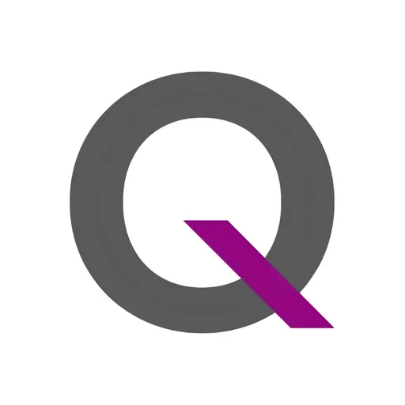

QBO Innovation Hub
QBO Innovation (a division of Ideaspace); founding partners Ideaspace, DOST, DTI and J.P. Morgan · NCR
QBO Innovation Hub is the Philippines' first public-private startup platform, established through a tri-sector founding partnership between DOST-PCIEERD (government), IdeaSpace (civil society), and J.P. Morgan and DTI (private sector and government). Now operating as a division of Ideaspace under the brand QBO Innovation, the hub has been a pillar of the Philippine startup ecosystem since 2016 — based at Zero-Ten Park, Legazpi Village, Makati City, in the heart of Metro Manila's business and technology district.
- Category
- Technology Business Incubator
- Host institution
- QBO Innovation (a division of Ideaspace); founding partners Ideaspace, DOST, DTI and J.P. Morgan
- City
- Makati City
- Region
- NCR
- Operating status
- Operating
About the Center
QBO Innovation Hub is the Philippines' first public-private startup platform, established through a tri-sector founding partnership between DOST-PCIEERD (government), IdeaSpace (civil society), and J.P. Morgan (private sector). Now operating as a division of Ideaspace under the brand QBO Innovation, the hub has been a pillar of the Philippine startup ecosystem since 2016 — based at Zero-Ten Park, Legazpi Village, Makati City, in the heart of Metro Manila's business and technology district.
QBO's mandate is built around three pillars: Grow the startup community, Develop Philippine startups, and Collaborate with the ecosystem. The hub functions simultaneously as a physical co-working and event space, an incubation program, and a convening platform that bridges founders, investors, corporations, the academe, government agencies, and international development organizations.
Over the years, QBO has expanded beyond startup incubation into full ecosystem development — conducting startup ecosystem mapping studies across Philippine regions, running digital transformation programs for enterprises and government, and operating international market immersion and soft-landing programs. The QBO QMMUNITY — its community membership — is free and open to startups, individual innovators, and mentors or investors who want to contribute to the growing startup ecosystem.
Programs & Services
- QBO HQ — co-working space at Legazpi Village, Makati, available for startup teams and reservable for startup-related events
- WORQSHOP — specialized workshops covering branding, marketing, fundraising, and other business skills
- SHOWQASE — investor pitch events connecting startups with angel investors, venture capitalists, and corporations for funding and partnerships
- QLITAN — regular networking events bringing together entrepreneurs, tech enthusiasts, and ecosystem players
- QONSULTATION — expert advisory on legal, financial, marketing, and design concerns from professional firms, plus government program guidance
- INQBATION — J.P. Morgan Incubation Program providing customized mentorship, training, networking, and market access opportunities to select startups
- BASIQS — introductory classes on startup fundamentals: business model canvas, validation techniques, and key entrepreneurship concepts
- FEEDBAQ — structured feedback and mentorship sessions with peer groups and selected industry leaders
- Startup Pinay — initiative empowering women founders, leaders, and enablers for a more diverse and inclusive startup landscape
- Ecosystem Development Services — advisory and program design for government agencies, international development organizations, and enterprises seeking digital transformation and innovation strategies
Contact
Sources & references
- qboinnovation.com
- projects.pcieerd.dost.gov.ph/project/6639
- dti.gov.ph/archives/news-archives/qbo-launches-hub-for-startup-programs
Details are drawn from public records and the sources above, July 2026.
Startupreneur Innovation Hub · synced from the Notion catalog (July 2026) · status: published.